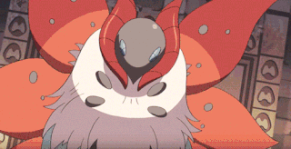
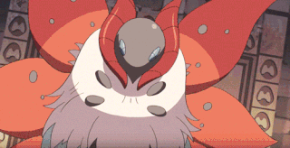
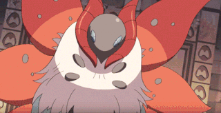

Elas têm cerca de setenta milímetros de envergadura, asas laranjas com listras pretas e marcas brancas. Por
não estarem adaptadas a temperaturas muito baixas, realizam longas migrações.
Na fase larval, comem as folhas das plantas hospedeiras. Enquanto que em sua fase adulta, consomem basicamente líquidos (do néctar das flores ao sumo em decomposição dos frutos); bem como costumam ficar longos períodos em jejum, em época das migrações. O sistema digestivo da borboleta é completo e consiste em um tubo, formado por uma bomba de sucção na frente e uma parte traseira mais alongada e enrolada. Durante a fase de hibernação no inverno, elas conseguem acumular gordura suficiente para que não precisem se alimentar. No entanto, eles precisam beber água. Esta é a razão pela qual pode haver um grande número de borboletas monarcas em áreas onde podem ser abastecidas com água.
Assim como os outros insetos, a osmorregulação nelas dá-se com a produção de urina concentrada e pastosa, lançada no interior do intestino e eliminada para o meio externo com as fezes. Assim, são capazes de absorver quantidades adicionais de água como estratégia para minimizar a perda de água no corpo. Além disso, apresentam exoesqueleto de quitina que reduz a evaporação de água do corpo.
A locomoção dos indivíduos dessa espécie varia de acordo com a fase de desenvolvimento. Quando larva apresenta apenas patas, sendo que mais tarde, já com asas, pode voar.
As estratégias de defesa incluem suas colorações vivas, a fim de intimidar predadores, que entendem que elas não têm um gosto agradável e podem causar diversas reações, como náusea, vômito e, até mesmo, a morte.
As borboletas não usam órgãos respiratórios ativos, como os pulmões, que exigem que o animal respire usando músculos especializados. Em vez disso, utilizam uma forma passiva de respiração, por meio de processos químicos para absorver oxigênio. O Sistema Circulatório é constituído por um coração tubular, que bombeia a hemolinfa, ou seja, o sangue desses artrópodes, por um único tubo sanguíneo chamado aorta dorsal. E finalmente, o Sistema Nervoso, assim como dos outros insetos, é do tipo ganglionar; apresenta um longo cordão nervoso ventral constituído de gânglios ventrais que estão ligados ao cérebro por um anel nervoso.
Na primavera tem-se o período de acasalamento, para reprodução suxuada, que ocorre imediatamente antes da migração dos locais de inverno. A corte da borboleta monarca é bastante simples e menos dependente de feromonas químicas em comparação com outras espécies em seu gênero. O namoro é composto de dois estágios distintos, a fase aérea e a fase terrestre. Durante a fase aérea, o macho persegue, cutuca e eventualmente derruba a fêmea. Lagartas pequenas nascem de ovos e crescem, derramando a pele para aumentar. Depois, forma uma caixa à sua volta chamada crisálida. Dentro da crisálida, ela muda seu corpo, em um processo chamado metamorfose, ao final do qual torna-se uma borboleta adulta.
O pokemón Volcarona remete à essa espécie de borboleta, apresentando semelhanças físicas, como a presença de asas e a coloração, evolução de larva para borboleta e intolerância ao frio:
 

Na fase larval, comem as folhas das plantas hospedeiras. Enquanto que em sua fase adulta, consomem basicamente líquidos (do néctar das flores ao sumo em decomposição dos frutos); bem como costumam ficar longos períodos em jejum, em época das migrações. O sistema digestivo da borboleta é completo e consiste em um tubo, formado por uma bomba de sucção na frente e uma parte traseira mais alongada e enrolada. Durante a fase de hibernação no inverno, elas conseguem acumular gordura suficiente para que não precisem se alimentar. No entanto, eles precisam beber água. Esta é a razão pela qual pode haver um grande número de borboletas monarcas em áreas onde podem ser abastecidas com água.
Assim como os outros insetos, a osmorregulação nelas dá-se com a produção de urina concentrada e pastosa, lançada no interior do intestino e eliminada para o meio externo com as fezes. Assim, são capazes de absorver quantidades adicionais de água como estratégia para minimizar a perda de água no corpo. Além disso, apresentam exoesqueleto de quitina que reduz a evaporação de água do corpo.
A locomoção dos indivíduos dessa espécie varia de acordo com a fase de desenvolvimento. Quando larva apresenta apenas patas, sendo que mais tarde, já com asas, pode voar.
As estratégias de defesa incluem suas colorações vivas, a fim de intimidar predadores, que entendem que elas não têm um gosto agradável e podem causar diversas reações, como náusea, vômito e, até mesmo, a morte.
As borboletas não usam órgãos respiratórios ativos, como os pulmões, que exigem que o animal respire usando músculos especializados. Em vez disso, utilizam uma forma passiva de respiração, por meio de processos químicos para absorver oxigênio. O Sistema Circulatório é constituído por um coração tubular, que bombeia a hemolinfa, ou seja, o sangue desses artrópodes, por um único tubo sanguíneo chamado aorta dorsal. E finalmente, o Sistema Nervoso, assim como dos outros insetos, é do tipo ganglionar; apresenta um longo cordão nervoso ventral constituído de gânglios ventrais que estão ligados ao cérebro por um anel nervoso.
Na primavera tem-se o período de acasalamento, para reprodução suxuada, que ocorre imediatamente antes da migração dos locais de inverno. A corte da borboleta monarca é bastante simples e menos dependente de feromonas químicas em comparação com outras espécies em seu gênero. O namoro é composto de dois estágios distintos, a fase aérea e a fase terrestre. Durante a fase aérea, o macho persegue, cutuca e eventualmente derruba a fêmea. Lagartas pequenas nascem de ovos e crescem, derramando a pele para aumentar. Depois, forma uma caixa à sua volta chamada crisálida. Dentro da crisálida, ela muda seu corpo, em um processo chamado metamorfose, ao final do qual torna-se uma borboleta adulta.
O pokemón Volcarona remete à essa espécie de borboleta, apresentando semelhanças físicas, como a presença de asas e a coloração, evolução de larva para borboleta e intolerância ao frio:
